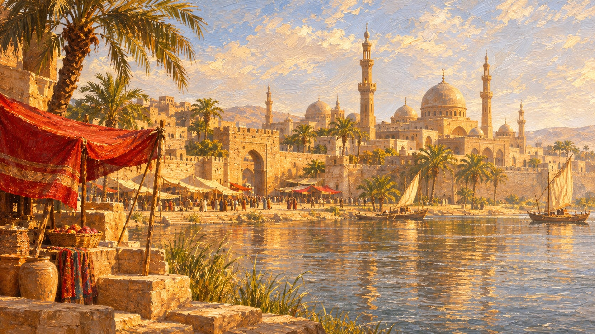
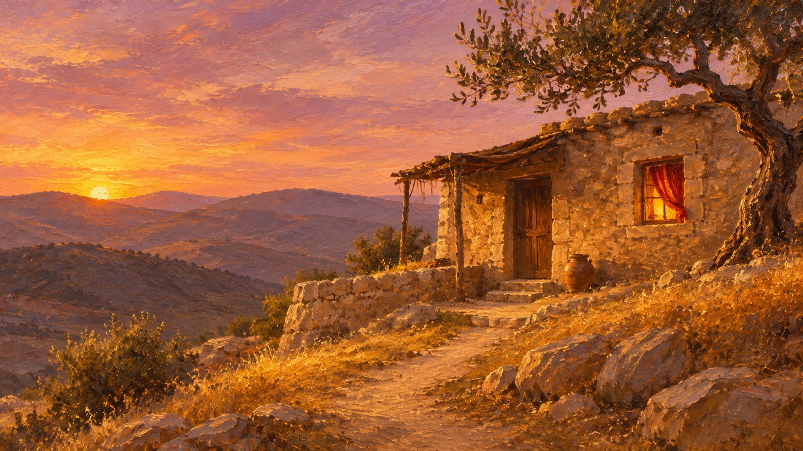
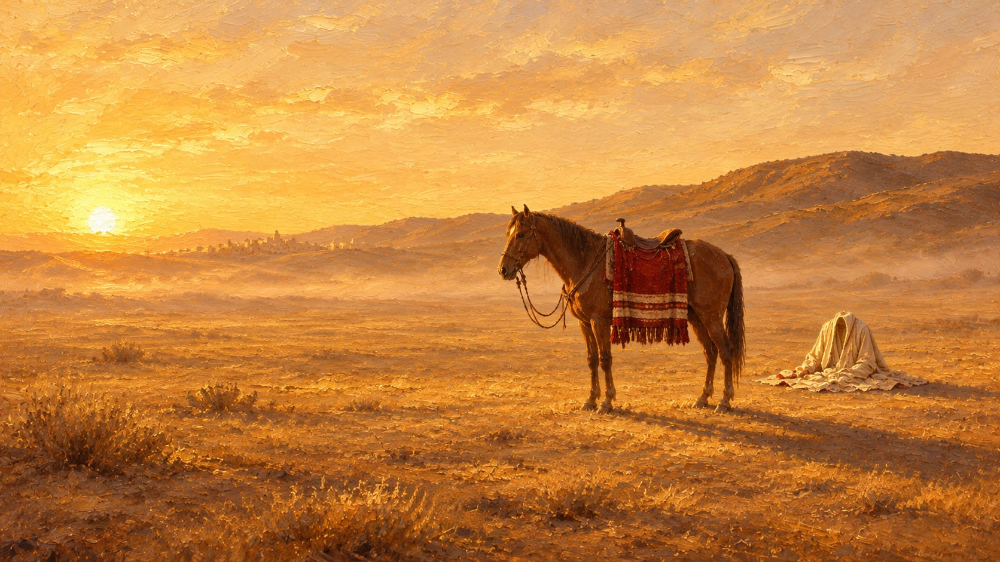
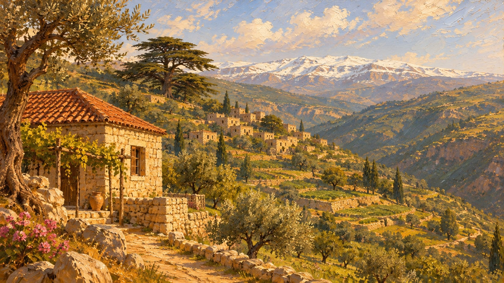

על שם עלי
העלאוים זה כינוי לזרם באסלאם, שיסודו באסלאם השיעי והתפתח לכדי תערובת של מסורות מדתות שונות. השם עלאוים, החדש באופן יחסי, מקורו באמאם עלי.
במשך מאות שנים כונו בני העדה "נצירים",

השורשמצרים, המאה ה-11
הדת הדרוזית היא דת סודית, שצמחה מתוך השיעה האסמאעילית במאה האחד עשר במצרים.
המנהיג הראשון שלה היה הח'ליף השישי של השושלת הפאטמית, אלחאכם באמר אללה. האישיות שעיצבה את הדת אחריו היה חמזה אבן עלי, אשר לו מיוחסים "אגרות החכמה" (רסאאל אלחכמה).
§5טקס אחד, בבית
ביסודה פולחן לגרמי השמים, יסודות נוצריים בחגים, ולוח השנה השמשי. כל אלה התעטפו בנאמנות לעלי, עד כדי היותו התגלמות הא-ל באדם.
גם העלאוית היא דת סודית: חאצה (המיוחדים) ועאמה (העממיים). ולה טקס יחיד — קדאס — בבית הפרטי של המאמין ולא במסגד.
§1 · §2
האמונהא-ל שלא נתפס
הדת מונותאיסטית, והא-ל לא נתפס בשכל האנושי. העולם מתחלק לתקופות (אדואר), ובראשיתה של כל תקופה הא-ל מתגלם בדמות בשר ודם.
דמות מזוהה עם הדת היא הנביא שעיב, ויש המייחסים אותו עם יתרו המקראי.
§6עניים ומדוכאים
במשך מאות שנים היו כפריים עניים ומדוכאים, והשנאה כלפיהם נבעה מהיותם "חריגים בנוף הדתי". אבן תימיה הוציא פתוה:
הנצירים הינם כופרים גרועים מן הנוצרים ומן היהודים, והמלחמה בהם היא מצווה.תקי א-דין אבן תימיה§3

הסףהשערים ננעלו
המחפשים מצאו את בגדיו זקופים — בלי שהוא עצמו בהם. הוא נחשב לע'אאב, ויחזור כמהדי.
ב-1037 ננעלו שערי ההטפה הדרוזית. האחרונים שהצטרפו: שבט תנוח'.
§7שכירי חרב, ואז משענת
לאחר שצרפת קיבלה את סוריה (1920) גייסה עלאוים כשכירי חרב בצבא המנדט, ובתמורה נתנה להם לפתח את זהותם.
עם השנים השתלבו בפוליטיקה הסורית, ונראה שלא ביקשו להתנתק מזהותם הדתית. להיפך, הם ראו בעדה משענת.
§3 · §4
המאה ה-20ההר
מהמאה ה-17 שלטה בהר הלבנון שושלת בית מען. ב-1860 אירע הטבח הגדול של הדרוזים במרונים, ומאז היוסדה של סוריה (1946) המנהיג המזוהה ביותר עם דיכויים היה שישכלי, שתיאר אותם כ'ראש הנחש'.
§9„בהמשך, יילחמו העלאוים יחד עם הצרפתים במרד הדרוזי בשנת 1925.”
„בשנת 1925 שחררו הדרוזים את הר הדרוזים בסוריה מהשלטון צרפתי.”
מיעוט פגיע
הדרוזים, שלרוב נשארים נאמנים למשטר, נשארו נאמנים לאסד. ב-2015 טבחה בהם ג'בהת א-נצרה סמוך לאדליב, וזה הפך אותם למיעוט פגיע.
עם עלייתו של אחמד א-שרע (דצמבר 2024) החלו עימותים עם א-סווידא, ובחלקם מדינת ישראל התערבה לטובת המיעוט הדרוזי.
§10 · §11